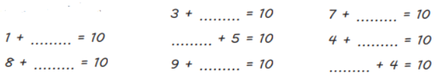
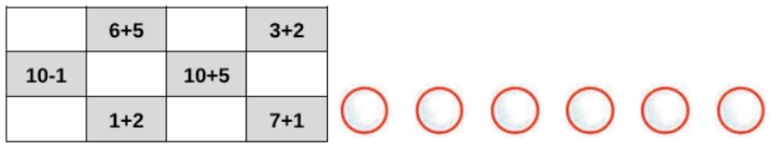
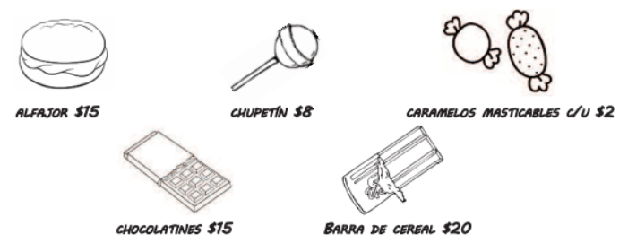
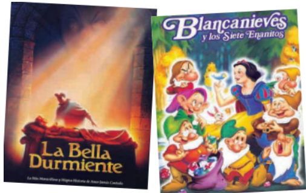
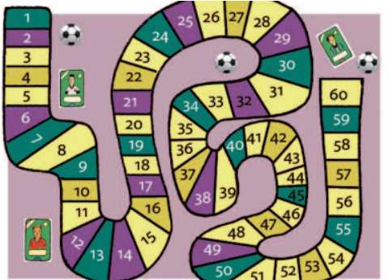
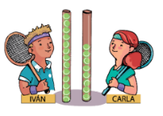
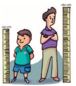
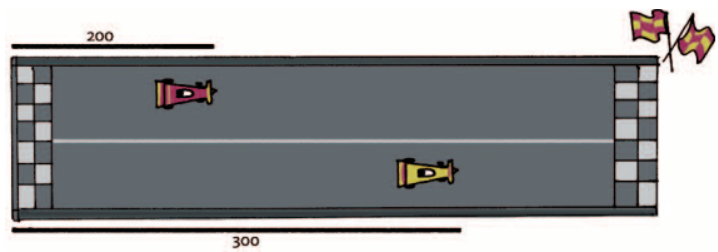
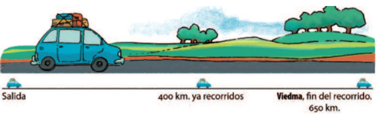
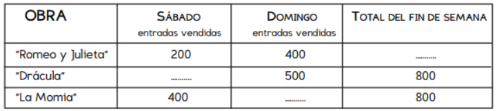

➕Numeración y operaciones➖
Presionar ↗️ para editar la actividad
Marcar la casilla y luego 📋 para copiar la actividad o 🖨️ para imprimir o exportar a .PDF
Presionar ↗️ para editar la actividad
Marcar la casilla y luego 📋 para copiar la actividad o 🖨️ para imprimir o exportar a .PDF
| Ficha 1 | ||||||
| 1. Sumas que dan 10  2. Completá estas sumas.
3. Usar un cálculo para resolver otro. a- Si 3 + 3= 6, ¿cuál será el resultado de 30 + 30? 160 60 16 b- Si 6 + 6= 12, ¿cuál será el resultado de 60 + 60? 100 112 120 4. En la lotería de sumas y restas Juliana tenía este cartón y completó todos los casilleros. ¿Qué numeros salieron? .Escribilos en las fichas que están al lado del cartón.  |
| Ficha 2 | |||||||||||||||||||||||||||
1. Resolvé las siguientes restas 9 - 1 = - 6 - 2 = 7 - 4 = 6 - 5 = 9 - 5 = 2. Sumar y restar 10 a un número: completá la siguiente tabla.
3. En el kiosko “¡Qué dulce!” aparece la siguiente lista de precios:  a- ¿Qué podríamos comprar con $25? b- ¿Cuánto debemos pagar si compramos un alfajor y dos barras de cereal? c- Cecilia gastó $50 y no le dieron vuelto ¿qué pudo haber comprado? d- José tiene que comprar 10 alfajores. si tiene $160 ¿Le falta o le sobra dinero? ¿Cuánto? |
| Ficha 3 |
| Problemas sobre libros 1  1. Darío leyó el cuento de Blancanieves, que tiene 4 páginas, y el de La bella durmiente, que tiene 5 páginas. ¿Cuántas páginas leyó entre los dos cuentos? ________________ 2. Brenda dice que a la mañana leyó 6 páginas y a la tarde 4 páginas ¿Cuántas páginas leyó en total? 3. El cuento “Hansel y Gretel” tiene 10 páginas. Si Gastón ya leyó 7, ¿cuántas le faltan leer para terminarlo? 4. Cada noche, antes de irse a dormir, Carolina lee 5 páginas de un libro. ¿Cuántas páginas habrá leído en 3 días? |
| Ficha 4 | ||||||||
Problemas sobre libros 2 5. a) A Ramiro le gusta mucho leer. Tiene 12 libros de cuentos de aventuras y 15 de terror. ¿Cuántos libros tiene en total? b) Ayer leyó hasta la página 30 de un libro de aventuras. Si hoy leyó 25 páginas más, ¿hasta qué página llegó hoy? 6. Malena tenía 40 libros, le regalaron algunos y ahora tiene 49. ¿Cuántos libros le regalaron? 7. Este cuadro muestra la cantidad de libros que hay de cada tipo en la biblioteca del grado de Sebastián.
a) ¿Cuántos libros de cuentos de hadas hay? b) ¿Y de animales? c) ¿Cuántos libros hay en total? 8. Cada semana, la escuela recibe una caja con 10 libros. a) ¿Cuántos libros recibirá al cabo de 4 semanas? b) ¿Y al cabo de 8 semanas? |
| Ficha 5 |
Problemas para empatar 1. En un juego de tablero, Corina está en el casillero 30 y Marcela en el 35. ¿Cuánto se tiene que sacar Corina en el dado para llegar al mismo casillero que Marcela?  2. Romina juega también y está en el casillero 60, mientras que Andrea está en el 50. ¿Cuántos casilleros tiene que avanzar Andrea para empatar con Romina? 3. virginia tiene 30 figuritas y yo tengo 20. ¿Cuántas figuritas tengo que conseguir para tener la misma cantidad que virginia? 4. Sofía tiene 70 figuritas y Cecilia tiene 50. ¿Cuántas tiene que perder Sofía para que le quede la misma cantidad que tiene Cecilia? 5. Julián en un juego de carrera de autitos ganó 600 puntos. Emilia está jugando su último juego. Tiene 400 puntos, ¿cuántos puntos tiene que sacar para tener lo mismo que Julián? |
| Ficha 6 |
Problemas para comparar 1. Para el campeonato de tenis están guardando las pelotitas que van a usar en tubos de plástico. Iván tiene 13 pelotitas y su amiga Carla tiene 8.  a- ¿Quién tiene más pelotitas? b- ¿Cuántas más?  2. Patricio mide 180 cm y su amigo Marcos mide 120 cm. ¿Cuánto tiene que medir el banquito al que se suba Marcos para alcanzar a Patricio? 3. María tiene su set de 15 pelotitas completo. Nahuel tiene sólo 7 pelotitas. a- ¿Quién tiene más pelotitas? b- ¿Cuántas más? |
| Ficha 7 |
| 1. ¡Carrera de autos! El auto A salió y avanzó 200 metros, el auto B va más adelante y ya avanzó 300 metros. ¿Por cuántos metros le va ganado el auto B al auto A?  2. La ruta entre la ciudad de Neuquén y la ciudad de Viedma es de 650 kilómetros. Un auto salió de Neuquén para ir hacia viedma y ya recorrió 400 kilómetros, ¿cuántos kilómetros faltan recorrer para llegar?  |
| Ficha 8 |
Más problemas para resolver 1. Sofía compró algunos alimentos para el comedor de la escuela. Llevó $1000 y gastó 500 en la verdulería y 300 en la panadería. ¿Cuánto dinero le sobró? 2. ¿Cuánto dinero recibió la cooperadora de la escuela este mes si tenía $600 y luego de juntar la recaudación tienen $1000? 3. En 4º grado hay 20 alumnos. Algunos se quedan a comer en la escuela y otros se van a su casa al mediodía. Se quedan a comer 15, ¿cuántos son los que se van a su casa al mediodía? 4. En la boletería del teatro se completó el siguiente cuadro para saber la cantidad de entradas que se vendieron cada día para cada espectáculo. Le faltan algunos datos, completalo.  |